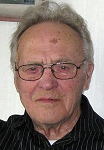
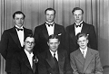

Torsten Gustaf Forsell
Komminister senast i Fällfors fs, Skellefteå kn. Blev 97 år.
| Född: | 1914-05-09 Holmfors 2, Skellefteå sn. [1] | |
|---|
| Änkling: | 1985-02-07 Brandellsv 18 B, Skellefteå, Skellefteå lfs, Skellefteå kn. [2] | |
|---|
| Levde: | 2003 Skellefteå lfs, Skellefteå kn. | |
|---|
| Levde: | 2007 Skellefteå kn. | Blir 93 år den 9 maj 2007 |
|---|
| Levde: | 2008 Fältjägarvägen 39 B, Skellefteå. [3] | |
|---|
| Levde: | 2011 Dirigentvägen 62, avd. 5, Skellefteå, Skellefteå lfs, Skellefteå kn. [3] | |
|---|
| Död: | 2012-03-07 Klockarhöjden, Skellefetå, Skellelteå lfs, Skellefteå kn. | På äldreboendet i egen lägenhet. |
|---|
| Vigsel: | 1938-12-18 Skellefteå lfs, Skellefteå sn. [4] | Torsten Gustaf Forsell, hem.äg. i Holmfors och Gerda Maria Larsson, hägdr. ifrån Skråmträsk. |
|---|
| Levde: | 1971 Latikberg, Latikbergs kbfd. Vilhelmina kn. [5] | |
|---|
| Levde: | 1981 Prästbordet Mössmakaren 4, Brandellsv 18 B, Skellefteå, Skellefteå lfs, Skellefteå kn. [6] | |
|---|
Noteringar
Äktenskapet blev barnlöst. Dock har de haft en flicka som fosterbarn, som enl. Skatteverket inte finns upptagen som adoptivdotter. Besked från Skatteverkets Folkbokföring 2011-05-04.
I sitt hem på Klockarhöjdens äldreboende avled den 7 mars komminister emeritus Torsten Forsell, 97 år.
Hans föräldrar var Adele och Algot Forsell i Holmfors och han föddes som nummer sex av elva syskon.
Torsten fick redan som ung slita tungt med dikning, vägarbeten och skogsbruk. Han närde tidigt en tanke om utbildning, men med den tidens knappa ekonomi var det omöjligt.
1939 gifte han sig med sitt livs kärlek Gerda Larsson från Skråmträsk och i samband därmed övertog han hälften av sin fars jordbruk som makarna drev tillsammans i många år. Under den tiden kallades han till församlingspredikant och resesekreterare för Kyrkobröderna.
Torsten läste teologi och fördjupade sina studier i Uppsala och prästvigdes 1967. Sin första tjänst som präst hade Torsten i Latikberg Vilhelmina, där han bland annat genom hembesök hos gamla och sjuka tillvann sig stort förtroende.
Efter fem år blev hans tjänst i Fällfors församling fram till pensioneringen då flytten gick till Skellefteå.
Torsten blev änkeman 1985. De sista åren har han bott på Klockarhöjden där han har fått trygghet och kärleksfull omvårdnad av en underbar personal.
Vi, hans närmaste, fick på senare tid höra honom berätta om barndomens kyrkfärder med häst och trilla, samt om sådd och skörd, minnen som framstår klarare på ålderns dag.
Vi unnar Torsten den sabbatsvila han längtat till. Närmast sörjande är fosterdotter Gurli med familj, samt systrarna Gunborg och Margit.
Margit
Publicerad Fredag 13 april
Personhistoria
| Årtal | Ålder | Händelse |
|---|
| 1914 |
|
Födelse 1914-05-09 Holmfors 2, Skellefteå sn [1] |
| 1916 |
2 år |
Systern Magda Kerstin Andréa Forsell föds 1916-07-12 Holmfors 2, Skellefteå sn [7] |
| 1918 |
3 år |
Systern Gunborg Anna Mari Forsell Vidman föds 1918-01-09 Holmfors 2, Skellefteå lfs, Skellefteå sn [8] |
| 1919 |
5 år |
Brodern Daniel Lennart Forsell föds 1919-10-28 Holmfors 2, Skellefteå sn [9] |
| 1923 |
8 år |
Brodern Amos Valdemar Forsell dör 1923-03-07 Holmfors 2, Skellefteå sn [10] |
| 1924 |
10 år |
Systern Margit Inga Greta Forsell föds 1924-07-26 Holmfors 2, Skellefteå sn [11] |
| 1928 |
14 år |
Brodern Harry Amos Forsell föds 1928-07-31 Skellefteå sfs, Skellefteå sn [6] |
| 1938 |
24 år |
Vigsel Gerda Maria Larsson 1938-12-18 Skellefteå lfs, Skellefteå sn [4] |
| 1964 |
50 år |
Brodern Ragnar Olaus Forsell dör 1964-10-29 Embla 4, Umeå sfs, Umeå stad [12] |
| 1965 |
50 år |
Fadern Johan Algot Forsell dör 1965-05-02 Holmfors 2, Skellefteå kn [13] |
| 1971 |
|
Levde Gerda Maria Larsson 1971 Latikberg, Latikbergs kbfd. Vilhelmina kn [5] |
| 1979 |
65 år |
Modern Sanna Adelia (Adéle) Furberg dör 1979-05-14 Brännans ålderdomshem, Skellefteå lfs, Skellefteå kn [14] |
| 1981 |
|
Levde Gerda Maria Larsson 1981 Prästbordet Mössmakaren 4, Brandellsv 18 B, Skellefteå, Skellefteå lfs, Skellefteå kn [6] |
| 1983 |
69 år |
Brodern Ivar Eugén Forsell dör 1983-06-11 Holmfors 6:1, Skellefteå kn [15] |
| 1985 |
70 år |
Änkling 1985-02-07 Brandellsv 18 B, Skellefteå, Skellefteå lfs, Skellefteå kn [2] |
| 1985 |
70 år |
Makan Gerda Maria Larsson dör 1985-02-07 Brandellsv 18 B, Skellefteå, Skellefteå lfs, Skellefteå kn [2] |
| 1986 |
72 år |
Brodern Verkmästare vid Bolidens Gruvaktiebolag Birger Algot Forsell dör 1986-10-08 Bjurliden 1:522, Torget 2, Boliden, Bolidens fs, Skellefteå kn [16] |
| 1991 |
77 år |
Systern Sanna Ingrid Alida Forsell dör 1991-08-31 Anderstorg 10 /401, Skellefteå, Skellefteå lfs, Skellefteå kn [17] |
| 1996 |
81 år |
Systern Magda Kerstin Andréa Forsell dör 1996-01-04 Vedby fs, Klippan, Kristianstads län [18] |
| 2003 |
|
Levde 2003 Skellefteå lfs, Skellefteå kn |
| 2005 |
90 år |
Brodern Daniel Lennart Forsell dör 2005-03-04 Fältjägarvägen 41 A, Skellefteå, Skellefteå lfs, Skellefteå kn [19] |
| 2007 |
|
Levde 2007 Skellefteå kn |
| 2008 |
|
Levde 2008 Fältjägarvägen 39 B, Skellefteå [3] |
| 2010 |
96 år |
Brodern Harry Amos Forsell dör 2010-11-08 Ön 6:11, Tegs fs, Umeå kn |
| 2011 |
|
Levde 2011 Dirigentvägen 62, avd. 5, Skellefteå, Skellefteå lfs, Skellefteå kn [3] |
| 2012 |
97 år |
Död 2012-03-07 Klockarhöjden, Skellefetå, Skellelteå lfs, Skellefteå kn |
Källor
| [1] | Skellefteå lfs C:23 25/1914 s.53 k.2/9, AIIA:14 (1912-1926) fol. 290 k.7/9 |
| |
| | |
| [2] | SPAR 90, RTB 85 |
| |
| | |
| [3] | www.hitta.se |
| |
| | |
| [4] | SCB Vigda AC Skellefteå lfs 148/1938, SPAR 90, RTB 85 |
| |
| | |
| [5] | Mtl Västerbottens län 1971 |
| |
| | |
| [6] | Mtl Västerbottens län 1981 |
| |
| | |
| [7] | Skellefteå lfs C:23 (1913-1917) 350/1916 s.258 k.6/9, AIIA:14 (1912-1926) fol. 290 k.7/9 |
| |
| | |
| [8] | Skellefteå lfs C:24 (1918-1921) 22/1918 s.3 k.1/9, AIIA:14 (1912-1926) fol. 290 k.7/9 |
| |
| | |
| [9] | Skellefteå lfs C:24 609/1919 k.4/9, AIIA:14 (1912-1926) fol. 290 k.7/9 |
| |
| | |
| [10] | AIIA:14 (1912-1926) fol. 290 k.7/9 |
| |
| | |
| [11] | Skellefteå lfs C 1924 256/1924 k.10/15, AIIA:14 (1912-1926) fol. 290 k.7/9 |
| |
| | |
| [12] | AL / DOR 64 / UTD 61-67, NV - Dödsannonsregistrering 1964-11-02 |
| |
| | |
| [13] | DOR 65, UTD 61-67, NV Dödsannonsering 1965-05-05 |
| |
| | |
| [14] | SPAR 80, RTB 79 |
| |
| | |
| [15] | SPAR 90, RTB 83 |
| |
| | |
| [16] | SPAR 90, RTB 86 |
| |
| | |
| [17] | SPAR 92, RTB 91 |
| |
| | |
| [18] | SPAR 96, RTB 96, SPAR 92 |
| |
| | |
| [19] | man91 / RFV 06 |
| |
|
|  |
| 2012. Torsten Forsell, kommiister emeritus |
| |
 |
| 1945. Familjen Adéle och Algot Forsell. |
| |
|  |
1945. Bröderna Forsell.
Bakre fr. v.: Birger, Ivar, Torsten
Främre fr. v.: Daniel, Ragnar, Harry
|
|

{kind=link}
{kind=link}